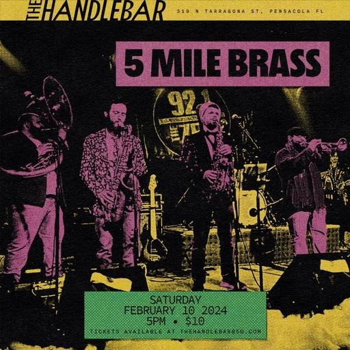

SAT FEB 10from the archive
5 Mile Brass, Cremro Smith, Coleman Lane, Mr. Madlove, Funky Lampshades, Panhandle Pirates
The Handlebar · 319 N Tarragona St, Pensacola, FL
5pm
Looking for a place to keep the Mardi Gras energy flowing? Look no further because we got you! On 2/10 right after the downtown parade we have an epic night of music scheduled 💜💚💛 we did a similar concept last year and it was one of our favorite days in 2023 so let’s run it back! At 5 @5milebrass will kick things off and then another show will follow featuring @cremrosmith @colemanlaneofficialmusic @mrmadlove @funky.lampshades and Panhandle Pirates Don’t miss this one!